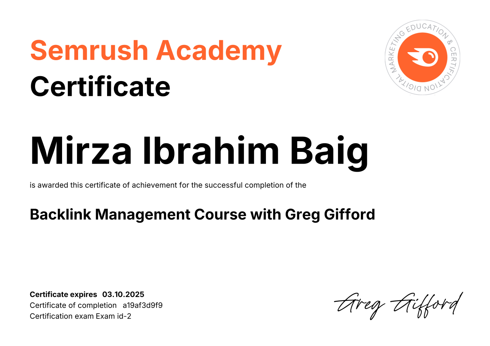

Credentials & Badges
Certifications
✦ Verified achievements & industry-recognized certifications.
01

IBM . SkillsBuild
Cybersecurity Fundamentals Certificate
Click to verify
02

GITHUB · Copilot
Prompt engineering and context crafting
Click to verify
03

MICROSOFT · AZURE AI
Cross-Azure AI Fundamentals
Click to verify

04SEMRUSH · GREG GIFFORD
Backlink Management Course
Click to verify
 05
05
AWS . Amazon
Solutions Architect
Click to verify
06
NED ACADEMY
PITP Program in Data Science
Click to verify